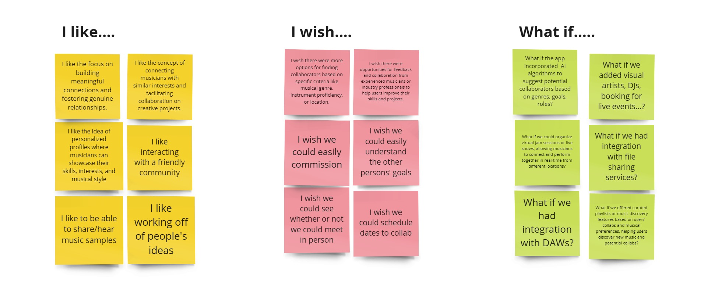
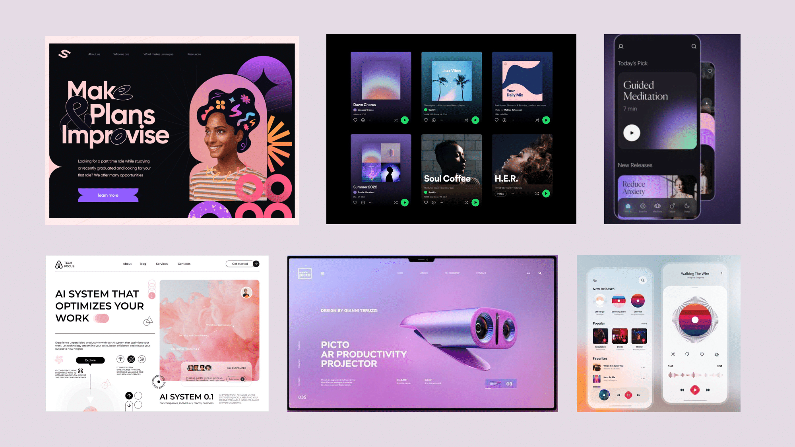

About
The final group project of my UX/UI bootcamp involved researching, prototyping, and testing another idea for a brand-new mobile application that must solves a real, clearly identified need in users’ everyday lives. Each class member pitched our own ideas and we underwent a process of ranked voting for what project we would like to be on the team on.
My team member Leighton pitched an app for music artists to find collaborations with each other, based on her own interest in finding collaborations as a indie music artist. I resonated with this idea, as I am also an avid music listener who spends time in many online communities where I often encounter indie music artists who are promoting their own music, as well as looking for collaborations and feedback from fellow artists.
The Problem
Musicians struggle to find and effectively communicate with collaborators that share their creative vision.
"How might we help musicians discover and effectively connect with compatible collaborators?"
The Goal
Deisgn a mobile app that addresses these issues through a new social networking app tailored specifically to the needs of musicians. Users would be empowered by our mobile app being able to:
- Create a personal user profile showcasing their music, interests, goals for making music, roles, and preferred genres.
- Discover compatible collaborators that fit their roles and genre preferences, and get a good sense of who they are through their music, interests, and goals.
- Easily request to collaborate, share music, and communicate.
User Research
Before we started user research proper, we first designed a proto-persona describing our target user.
Proto-Persona
Our proto-persona was based my team member, as well as friends who we knew produced music independently. We imagined a young person who is new to collaborating with other musicians. We also thought that despite using social media, this user finds it hard to find an audience and other musicians to collaborate with.
{kind=link}
User Survey
We conducted a user survey with 36 respondents, selecting for people who made music. We asked questions regarding their habits and behaviors (i.e. how they produced music, where they shared their music, how they found collaborations). This not only helped paint a picture of our target user, but also was valuable research for learning what music production entailed.
Some weaknesses in the data collection for this survey are that the respondents were selected by convenience, with a large amount of them contacted through Discord. This may cause an overrepresentation of users reporting Discord as their platform of choice for sharing music and/or finding collaborators, as well as reporting that they more often find collaborators online than in person.
Despite this, we found several interesting data points:

We also got some interesting responses to open-ended questions. Here is a sample:
If you used online platforms to meet a collaborator, what did you like or dislike about that online platform?
- "I disliked the difficulty of FINDING a person that aligns with you, but I loved the variety and diversity of people I found."
- "No way to set calendar dates in TikTok because you can’t send links. I wish I could send a contact card and make a plan right away when that person is in the moment about the collab."
- "I was only able to find people to collab with on Instagram through boosting my videos and specifically targeting my audience to musicians. So I would say that’s something I don’t like because I’m limited to doing that or else my videos probably wouldn’t be seen by other artists."
It was clear to us that there was an unmet user need for an effective way to find and communicate with music collaborators with current online platforms.
User Interviews
We conducted five one-on-one user interviews.
Like the survey, we wanted an idea of their habits regarding music production, how they shared music, and how they looked for collaborators and/or commissions.
We also asked what people looked for in a potential collaborator, for example, what kinds of questions they would ask them to get an idea of whether or not they wanted to collaborate with them. These insights helped me to develop my idea of a feature that could help artists understand each other better.
We gathered all the insights we gained from our survey and interviews and arranged them into an affinity diagram, showing the common trends between them.
{kind=link}
{kind=link}
Our main takeaways:
- Though many users have collaborated with another artist online before, many users have or want to collaborate in person. This means that sharing the location is important.
- Users want to hear another artists' music samples.
- A significant amount of users are involved in commissions.
- Users look for various qualities in a potential collaborator, such as someone with different strengths or abilities to them, or a similar vision or genre to them. Importantly, they want to know the goals of the other person and if they align with their own goals.
Empathy Map
We then created an empathy map that synthesized what we learned from our user research. It summarizes what our users say, think, feel, and do, their pains (obstacles, frustrations) and gains (motivations, potential successes).
{kind=link}
Definition & Ideation
With an idea of what users need, we started to explore the possible features our app needed to address them.
Competitor Analysis
We tried to find direct competitors when it came to online platforms expressly built for music collaborators to find each other, as opposed to the general social media platforms that our userbase more popularly already use. We found the platforms el3ment and BeatStars. For indirect competitors, we looked at the messaging app Discord and the dating app Hinge.
BeatStars is a "digital production marketplace" where artists and producers collaborate, license, and distribute their work. We liked that users can easily upload their music and have control of their own licensing terms and revenue splits. It would be a great place to start basing a system of commissions for our app around. However, because it is so focused on buying and selling, it may not be best for finding collaborations for artists who have different goals, aren't as business focused, or don't have a beat ready. One also does not get a good sense of the other artist from their user profiles.
el3ment is a social networking app for "music makers to connect and collaborate." Its strengths include search filters by location, role, genre, or instrument, and a translation function that helps connect artists globally. It is extremely close to what we were envisioning, but there is still room for improvement based on our user research. Although the majority of users wanted to listen to music samples and know the other artists' roles, as el3ment's user profiles provide, they are also looking for certain qualities in a potential collaborator.
Discord as a messaging app is not expressly built for music artists. However, there are communities within Discord, such as the Kenny Beats server, that center around music production. There are channels to promote your work, ask questions, recieve feedback, and ask for collaborations. Its main strength is that it is a cohesive community, in this case formed around Kenny Beats, a producer. The community generally has a shared understanding of the genres he usually works in, as well as participates in community events and livestreams of his. This would be a great place to look for ideas on how to foster a community of artists.
Even though Hinge is a dating app, we studied it as an example of a online social platform where people get to know and message each other. We loved the Prompts feature, which are conversation starter questions. A model of how users can understand the other persons' goals is found in the "dating intentions" part of the profile. Additionally, there is a ghosting countermeasure in the "Your Turn" feature that reminds a user to continue a conversation, and the "We Met" feature allows users to privately confirm that they have at least had a first date with a particular match.
We recognized the need for a comprehensive solution to our users' needs that involved synthesizing the strengths of these apps and improving upon them with insights from our user research.
Feature Definition and Prioritization
We then began define and organize ideas for features based on their feasibility and originality.
{kind=link}
{kind=link}
We prioritized the features that were both feasible to complete for a MVP and would fulfill the users' needs, while also making note of more original ideas that would be nice to have.
- Our key features in the “Now” portion: personal user profiles with music samples, skills, goals, interests, and location; a way to communicate with other artists
- More complex features near the “Wow!” section: commission feature, scheduling feature, shared community features, ways to give and ask for feedback, AI suggestion algorithms.
- Interesting “How?” ideas: Adding other roles that surround music making such as visual artist, DJ, and event booking; integration with DAWs and file sharing services
We once previously considered a collaborative DAW and file sharing as part of the application in earlier stages of ideation, but our user research shifted our focus to what was missing from the current social networking between music artists.
{kind=link}
Testing & Iterating
With our plans for features, we then began to visualize our mobile app and create prototypes to test and iterate upon.
User Flow
In our proposed user flow, takes users from the sign up process to building a profile, going to the Discovery page to browse artists, finding the profile of a potential collaborator, following them, and sending them a request to collaborate.
{kind=link}
Sketches
Based off this user flow, we all sketched out wireframes for screens. Remarkably, our sketches all looked similar to each other. We used familiar design patterns from other apps that had selectable tags and user profiles.
Lo-fi Prototype
We moved from our sketches to an intermediary between a digital wireframe and a lo-fi prototype, so we could begin testing and iterating upon it faster.
Usability Testing and Iterations
We then took our lo-fi prototype to conduct usability tests. We tested on the following tasks and the steps needed to accomplish them:
- Successfully create an account.
- Enter email and password on the sign up screen.
- Tap "Sign Up"
- Interact and fill out the fields on the Create Profile page.
- Click "Save Profile" to proceed to the completed profile.
- Successfully request to collaborate with another artist.
- Navigate to the Home page using the bottom navigation bar.
- Tap Karol's card.
- View Karol's profile.
- Tap "Request" to request to collaborate.
- User sends a message request.
Our testing results showed a good success rate on both tasks. Our users stated that it was "very easy to request for collboration," and "overall very intuitive." We would fix most of the small navigation consistency issues in the transition to Hi-Fi, though one user did note that the "design of tag selection process was unclear." Based on this, we made iterations to the prototype:
We increased the font size of the title of the tag section, and added a subtitle instructing the user that they could select one or more tags. We also changed the design of the tags to have a symbol to signify adding and canceling and bold text when selected.
Hi-Fi Prototyping
UI Moodboard
Here are some inspirations for our UI drawn from music apps and others. We liked color palettes that included purple, which is more calm than red and more exciting than blue, especially in pastel shades that pop against black and white. We also liked the buttons and icons with simple thin black borders.
Style Guide
{kind=link}
In our style guide, you can see us explore a dark mode version of our colors with light shades of teal with a black background. I came up with the initial design of the logo from two beamed pairs of eighth notes for the H initials.
A/B Testing
We conducted A/B testing to help us make some visual decisions for our hi-fi protoype. Here is some of the feedback we recieved regarding the kind of visual decoration direction we could have for these screens:
- "Of these C looks more inviting! Love the illustration!"
- "I like A, but a different screen can have the illustrations."
- "I like C but think illustrations don’t need to be on both pages especially if there were to be a long list like in B."
Conclusion
I thoroughly enjoyed putting this project together, especially conducting the user research, because it was such a great idea and it related to my interests, my friends' interests, and the online communities we all were part of. We got to learn a lot about music production, which was fun hearing about from people who we did not know much about their hobbies before.
We had a smaller team and a limited timeframe, so our lo-fi was a intermediary between a digital wireframe and a low-fidelity prototype, and immediately iterated upon that to a hi-fidelity prototype. We were fortunate to have a closely aligned understanding for what the app could look like during our sketching, owing to our design inspirations and our experience over the course of the bootcamp. We also learned to make a to-do list of the specific screens we needed to prioritize for our MVP. Though building this quickly helped keep up with our schedule, we could have benefited from going through each step of the prototyping process through more consideration and refinement of our design concepts.
Next Steps
Our next steps would be to further build out, test, and iterate upon the hi-fidelity prototype with our original ideas, such as search filters, a system for taking commissions, and making connections between artists with likes and follows. We would also like to add a dark mode.
There is a lot of room for growth, as we want to add features we ideated such as a community hub, more discovery engines like playlists, and scheduling and engagement features to the messaging function. These would fulfill more of our users' needs for a friendly community of artists, for more ways to discover collaborators, and for effective communication with their collaborators.